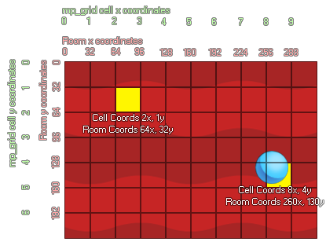

mp_grid_add_cell(id, h, v);
| Argument | La description |
|---|---|
| id | Index du mp_grid à utiliser |
| h | Position horizontale de la cellule dans la grille |
| v | Position verticale de la cellule dans la grille |
Retours: N / A
Avec cette fonction, nous pouvons marquer des cellules individuelles dans le mp_grid comme étant «interdites», ce qui signifie que les fonctions de recherche de chemin ne les traverseront jamais. Maintenant, normalement, vous travaillez dans les coordonnées de la pièce x / y, et non dans les coordonnées de la cellule mp_grid. Alors considérons l'image suivante qui montre comment les deux peuvent corréler:

Comme vous pouvez le voir le mp_grid est numéroté comme une série de cellules (commençant à 0,0 dans le coin supérieur gauche), et quand vous placez cette grille sur la pièce il y a une corrélation directe entre les coordonnées de la pièce (qui commencent également à 0, 0 en haut à gauche) et les cellules de la grille. Dans l'image, vous pouvez voir qu'une instance à la position 260,130 tombe sur la cellule de grille 8,4. Vous pouvez calculer mathématiquement la cellule exacte sur laquelle une position atterrit facilement soit en divisant le nombre par la résolution de la grille puis en arrondissant vers le bas ou (si vous utilisez la puissance de 2 résolutions de grille comme 8, 16, 32 etc...) vous pouvez utilisez les opérateurs au niveau du bit. Il convient de noter que l'opération au niveau du bit est plus rapide. L'exemple ci-dessous montre les deux méthodes.
with (obj_Wall)
{
mp_grid_add_cell(grid, floor(x / 32), floor(y /
32));
}
with (obj_Door)
{
mp_grid_add_cell(grid, x>>5,
y>>5);
}
Le code ci-dessus fera tout "obj_Wall" et tous obj_Door ajouter leurs positions de cellules équivalentes dans le mp_grid indexé dans la variable "grille". Dans la première partie de l'exemple, ceci est fait en prenant les coordonnées x / y de l'objet et en les divisant par la résolution de la grille (en utilisant floor pour garder les valeurs comme des entiers), et dans la deuxième partie (puisque la résolution de la grille est une puissance de 2), cela se fait en décalant les coordonnées x, y 5 endroits vers la droite.